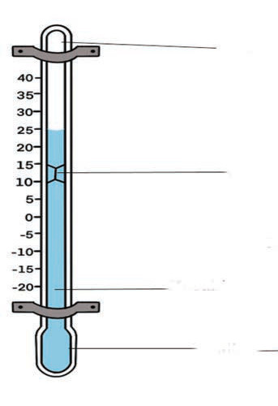
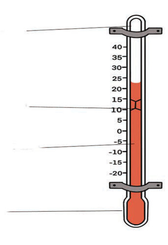

within the thermometer. Additionally, it is safer to use than other substances like mercury. This is why coloured alcohol is used in minimum thermometers. Figure 1 shows the maximum thermometer and the minimum thermometer.

Mercury
Bulb
(a) Maximum thermometer
Vacuum
Index
Alcohol

(b) Minimum thermometer
Figure 1: Maximum and Minimum thermometer
The maximum and minimum thermometers are kept in a special box called a Stevenson screen. The Stevenson screen is a wooden box painted white. The white colour helps reflect light. This reflection prevents solar radiation from affecting the temperature readings. Figure 2 shows the Stevenson screen.

Figure 2: Stevenson screen